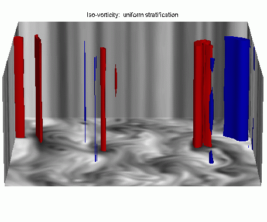
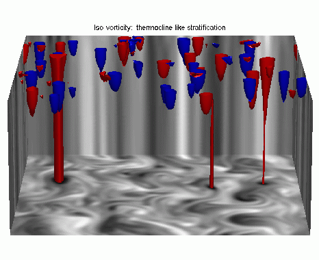

<font
 face="Verdana, Arial, Geneva, Helvetica, sans-serif">
 <font size="2">
<HTML>
<BODY>
<H2>Research Interests</H2>

My interests are in climate dynamics generally, and my work varies between basic research in geophysical fluid dynamics and more applied modeling of various aspects of the ocean, atmosphere, or climate, although distinguishing between these subfields can sometimes be quite arbitrary.  A common feature of my work is trying to use basic theory in conjunction with more complete numerical models to come to a more well-rounded understanding of phenomena than can be achieved with a single approach.

<br> <br>

On the oceanic side, much of my recent work has been devoted toward trying to understand the three-dimensional structure of the wind-and-buoyancy-driven circulation, and in particular the thermocline. The effects of ventilation (or subduction), diffusion and mesoscale eddies all play a role, and disentangling their sometimes competing effects involves the use of both numerical models and theory.  I'm now trying to understand the ocean's role in climate change-- how does the ocean absorb heat in a warming planet?

<br> <br>

On the atmospheric side, I've recently been looking at the nature of variability at timescales from a week to a season, and how this might be caused by the interaction of baroclinic and stationary eddies. I'm also interested in understanding such fundamental problems as what determines the height of the tropopause and the stratification of the troposphere. Again, a complete understanding of all this involves bringing together areas as seemingly diverse as the theory of geostrophic turbulence, wave-meanflow interaction, and general circulation modeling of the atmosphere.

<br><br>

Finally, I'm interested in problems regarding the coupling of the atmosphere-ocean system, for it is the coupling that makes the climate system what it is. I'm currently working on two classes of problems:
<UL>
<LI>What are the mechanisms and timescales of climate variability? <br>
  Most recently, with colleague Riccardo Farneti, I've ben looking at the mechanisms of decadal climate variability, but I'm also interested in climate variability on much longer timescales.

<LI>What determines the polewards energy ('heat') transport in the climate system? 
<br>
   It is observed that the heat transport is larger in the atmosphere, except at very low latitudes where the ocean dominates. Is this a fundamental property of the system, or is it a consequence of the geography and particular parameters of the atmosphere and ocean, and something that might easily be otherwise?
</UL>

<BR>
</UL>

Please go to my publications page <A href="../papers/index.html"> here </A> for more details
<P>

<h4> Background </h4>
My primary interests lie in the large-scale circulation of the atmosphere and ocean. I was initially trained in atmospheric dynamics (in the Department of Physics at Imperial College, London), and my earlier work was mainly in dynamical meteorology. More recently much of my research has been in physical oceanography. In general, dynamical meteorology and physical oceanography are (in my opinion) <I>two branches of the same subject.</I> They are intimately linked in two rather different ways: (i) Intellectually, for very similar equations describe the evolution of both fluids. (ii) Physically, the ocean and the atmosphere are in contact over about two-thirds of the earth's surface. Many interesting phenomena in the climate system (and perhaps many more phenomena in climate <I>models</I>) arise from looking at the coupled system. Recent interest in problems of climate change has led to a much-heightened awareness of the need for understanding the myriad interactions and feedbacks in this complex ocean-atmosphere system, and the realization that it is one of the most fascinating and difficult problems in all of science. </P>


<h4> Tools and Problems </h4>
<P>The tools I use to investigate these phenomena range from simple semi-analytic models to near-realistic models (<I>General Circulation Models,</I> or <I>GCMs</I>) of the ocean, atmosphere, and coupled system. I am also interested in turbulence theory --- occasionally and perhaps slightly pretentiously called the last unsolved problem in classical physics. My current, ongoing work is largely in the following areas: </P>

<P></P>
<UL>
<LI>Coupled ocean-atmosphere dynamics and climate variability.
<LI>General circulation of the atmosphere and/or ocean. <br>
<LI>Mesoscale eddies and oceanic variability. 
<LI>Geophysical fluid dynamics and turbulence modelling. 
</UL>
<P>If you are interested in working in one or more of these areas as a student
or as a post-doc, please send me an email.</P>

<P>

<h4> Themes and Philosophy </h4>

One general theme underlying my work is the following: In order to predict or to accurately simulate the climate system requires very complicated models, which involve a large number of people contributing to them and writing code. It becomes nearly impossible to understand the models, let alone the <i>behaviour</i> of the models. On the other hand, classical 'GFD' and related theory is in danger of becoming less relevant, either because analytic theories fail to describe the behaviour of the real world and so are perceived as becoming divorced from reality, or because those running GCMs might fail to appreciate the insight that theory can bring to the table. But at the same time, we should all realize that GCMs do contribute a great deal, and are the single most powerful tool for predicting the climate. Ironically, as GCMS become more complex, the need for simpler theories becomes greater, not less. We need both complex models and simpler theoretical ideas to fully understand the system. See also a recent lecture on this topic <A href="http://www.princeton.edu/~gkv/talks/Starr.pdf"> here. </A>)
</br>
The talk was somewhat light-hearted, but the issue is a serious one. 

To address this, with colleagues I am engaged in an effort to build models that capture the important aspects of climate and the large-scale circulation, but without unnecessary detail. Such models are designed to bridge the divide between the full-blown GCMs on the one hand, and analytic models and theories on the other. Thus, the behaviour of such models could be,  on the one hand, compared to that of GCMs for the sake of realism, while on the other hand the behaviour of the models could be analyzed using 'GFD' type theories. Taken together, we thus construct a sequence or hierarchy of systems: 
<br>
(i) The real world; (ii) High-end GCMs; (iii) Intermediate models; (iv) 'GFD' models.
<br>

As regards item (iii) my efforts are two-fold:
<br>
<UL>
<LI> A moist, idealized, atmospheric model with simple parameterizations.</LI>
<LI> A simplified, coupled, ocean-atmosphere model for climate studies. </LI>
</UL>
<br>

Both models use the hydrostatic primitive equations. These are being constructed with the help of my colleagues Riccardo Farneti, Isaac Held, and Ming Zhao. The atmospheric model is based on earlier model by Frierson et al (2007).


<br> <br> <br>
<!--

One general theme is to try to find the simplest possible model that
explains a phenomenon. One example is that of jets in the ocean and 
atmosphere - click <A HREF = "../jet/">here.</A> 
<P><BR>
Below are a couple of images of a geostrophic turbulence. The first shows
how, in a 'classical' case of uniform stratification, the eddies 'barotropize,'
that is increase their vertical scale to fill the domain. However, the second
image shows that if the stratification is non-uniform, as in the ocean,
the eddies are confined to the upper part of the domain. Theory and numerical
experiments showing how this can help explain the size of eddies in the
ocean forms the basis of ongoing with my colleague, Shafer Smith.<BR>
 </P>
<HR>
<center>
<P><BR>
<P>
 <BR>
 </P>
</center>
-->

<!-- Start of StatCounter Code -->
<script type="text/javascript" language="javascript">
var sc_project=2329354; 
var sc_invisible=0; 
var sc_partition=21; 
var sc_security="6215c22f"; 
var sc_text=2; 
</script>

<script type="text/javascript" language="javascript" src="http://www.statcounter.com/counter/counter.js"></script><noscript><a href="http://www.statcounter.com/" target="_blank"></a> </noscript>
<!-- End of StatCounter Code -->

</body>
</html>